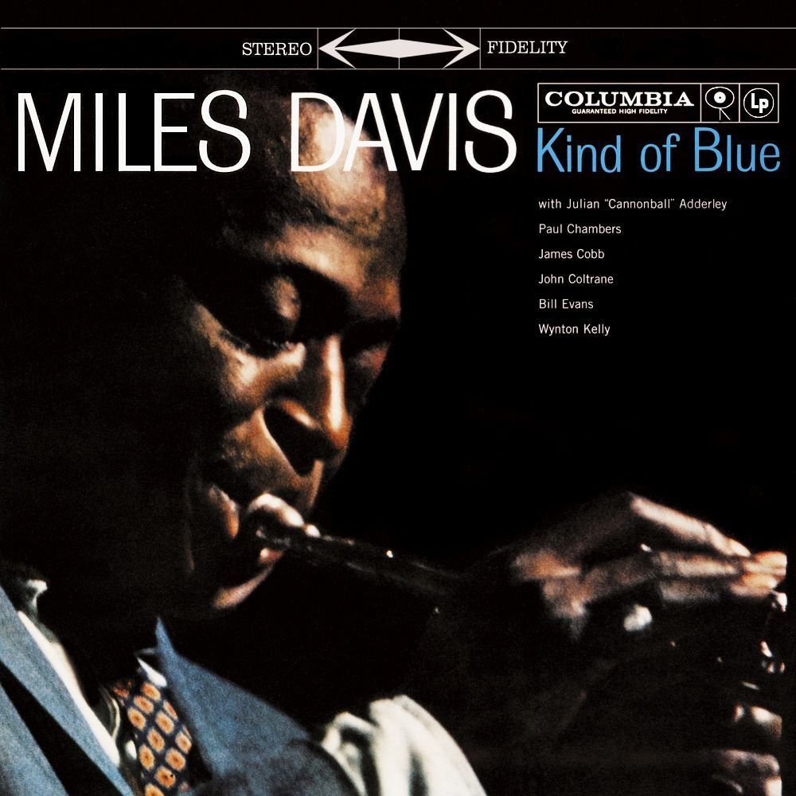

Kind of Blue
Miles Davis
Released: August 17, 1959
Band Members and Producers
Miles Davis - Trumpet
John Coltrane - Tenor Saxophone
Cannonball Adderley - Alto Saxophone (All Tracks Except 3)
Bill Evans - Piano
Wynton Kelly - Piano (Track 2 Only)
Paul Chambers - Bass
Jimmy Cobb - Percussion
Producer: Irving Townsend
Engineer: Fred Plaut
Tracks
Track #
Title
Length
1
So What
9:22
2
Freddie Freeloader
9:46
3
Blue in Green
5:37
4
All Blues
11:33
5
Flamenco Sketches
9:26
6
Flamenco Sketches* (Alternate Take)
9:32
*Not on original LP